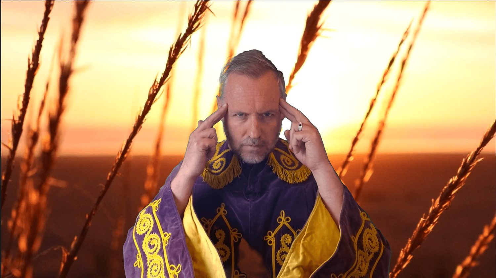

In 1944, the U.S. Supreme Court handed down a decision that laid the foundation for religious scammers to raise unfathomable fortunes through fraud. The ruling effectively gave religious leaders the legal right to sell miracle cures, supernatural services, and snake oil remedies under the protective umbrella of "sincerely held beliefs."
Fast forward 80 years, and that same legal precedent has helped fuel a booming industry of wellness influencers, spiritual gurus, and multi-level marketing schemes. Today, they crowd our social media feeds, promising divine transformations and quantum healing—if only you’ll click “subscribe.”
But how did we get here?
The Case That Started It All
Let’s rewind to the 1930s. Guy and Edna Ballard founded a spiritual movement known as the I AM Activity, a cult-like group that claimed contact with “Ascended Masters”—mythical beings said to congregate inside Mt. Shasta. The Ballards preached that you could heal anything, even incurable diseases, through the power of positive thinking and divine energy.
Their product lineup included things like the "violet ray" device, marketed as a miracle cure for everything from blindness to cancer. And followers didn’t just donate money—they offered what the Ballards called “I AM love gifts”. The couple got rich. Really rich. We’re talking luxury cars, jewel-draped outfits, and a mansion in Los Angeles’ Griffith Park.
I found out about the Ballard case though investigative journalist Leah Sottile, whose bookThe Blazing Eye Sees Alldescribed how the Ballards built a massive mail-order empire rooted in belief-based commerce. The Department of Justice, however, wasn’t buying it. They charged the Ballards with fraud, citing 18 specific cases where the couple made false medical claims.
But here’s the twist.
When the case reached the Supreme Court, the majority ruled that the truth or falsity of religious beliefs was not for the courts to decide. The only legal question was whether the Ballards “sincerely” believed what they were preaching. If they did, they were protected under the First Amendment—even if what they sold was utter nonsense.
Chief Justice Harlan Stone dissented, warning:
"Freedom of thought and worship [does not] include freedom to procure money by making knowingly false statements about one's religious experiences."
But his warning went unheeded.
The Rise of the Wellness Grift
This ruling opened a Pandora’s box. As Sottile explains, it gave cult leaders and spiritual entrepreneurs legal cover to sell anything, as long as they framed it as part of a religious practice.
That cover has proven remarkably durable.
Over time, the Ballards’ brand of spiritual capitalism merged with self-help movements, the New Age explosion of the 1960s, and modern-day wellness culture. And it wasn’t just about healing—it was also about hierarchy. The I AM Movement’s teachings weren’t just mystical; they were also deeply racialized, promoting a white “ascended” class.
Sottile connects the dots between early spiritual cults and today’s far-right conspiracies. So if you’re wondering why yoga influencers are now endorsing political extremists or why crystal healers are quoting QAnon—well, it didn’t start with COVID or RFK Jr. It started back with the Ballards.
From Ascended Masters to Instagram Shamans
Look around today, and you’ll see Ballard’s spiritual descendants everywhere:
Joe Dispenza, promising quantum transformation through thought alone
Deepak Chopra, repackaging mysticism as molecular biology
Countless supplement peddlers claiming divine insight into your gut health
They’ve ditched the violet ray for Instagram reels, but the sales pitch is the same: Believe hard enough, and anything is possible.
They tell you science is optional. That “frequency” matters more than fact. That you can manifest your health, your wealth, and your purpose—all for $99.99 a month.
The kicker? They’re protected by the law. Thanks to Ballard v. United States, it’s perfectly legal to market pseudoscience as sacred truth. As long as it's part of a “sincerely held belief,” regulators can’t touch it.

The Final Grift: Enlightenment for $8 a Month
Which brings me to my final point… Have you felt blocked, unaligned, or like your third eye is a little lazy? Don’t worry. For just $8/month, I will personally whisper your name into the wind, spiritually align your chakras, and email you 100% unverifiable mystical energy when you sign up for my newsletter right now.
Yes, I’m joking. Kind of.
Because the truth is, the line between parody and reality has never been thinner. Today’s spiritual grifts come wrapped in pastel colors and affirmations, but they still prey on vulnerability, loneliness, and desperation—just like they did in the 1930s.
So what’s the takeaway?
Sometimes the most dangerous scams are the ones protected by law. The Ballard ruling didn’t just shield religious fraud—it codified a loophole that modern charlatans still exploit today.
And unless we reckon with that, we’re going to keep falling for miracle cures, quantum healers, and $300 crystal kits that promise salvation—one monthly payment at a time.